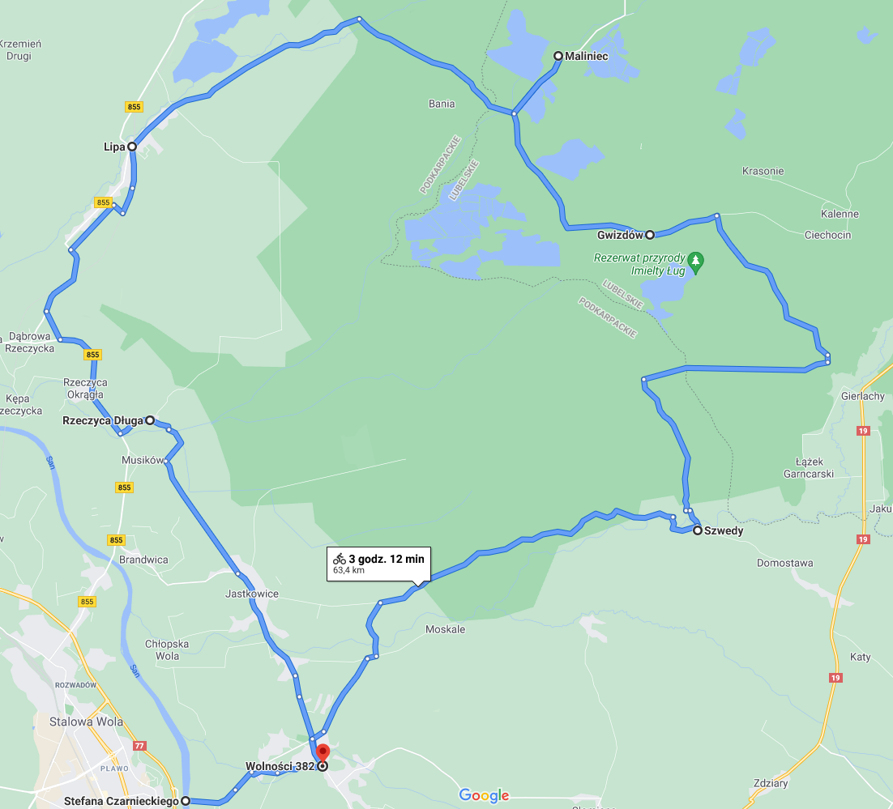

Wycieczka rowerowa
Trasa
co będzie oprócz rowerów?
Informacje o wycieczce
Data wydarzenia: 11 czerwca 2021r.
Godzina wyjazdu: 10:15
Planowana godzina powrotu: 19:15
Czas przejazdu trasy: ok. 3 godziny
Łączny czas trwania wycieczki: ok. 8 godzin
Długość trasy: 63,5km
